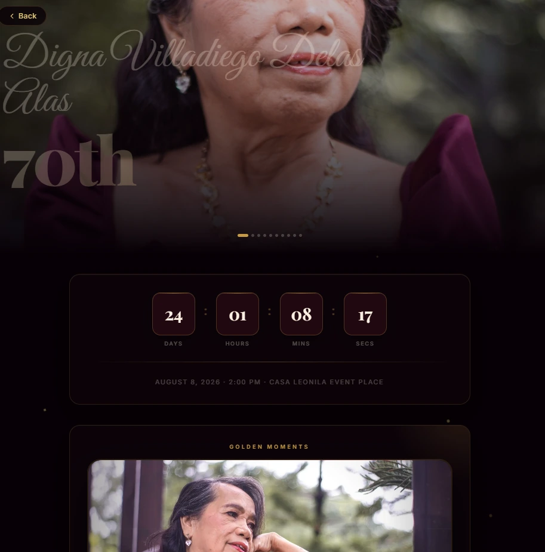
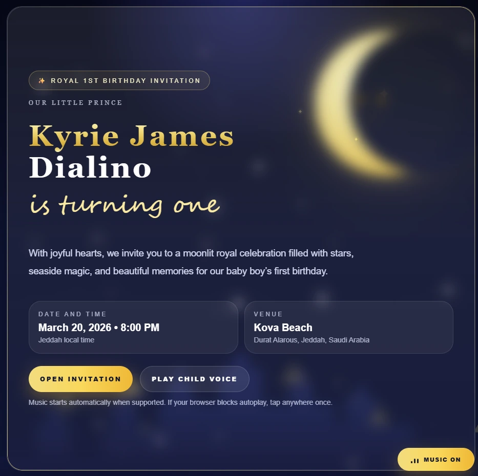
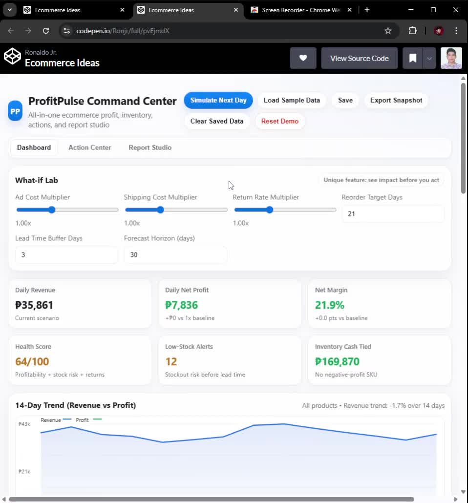
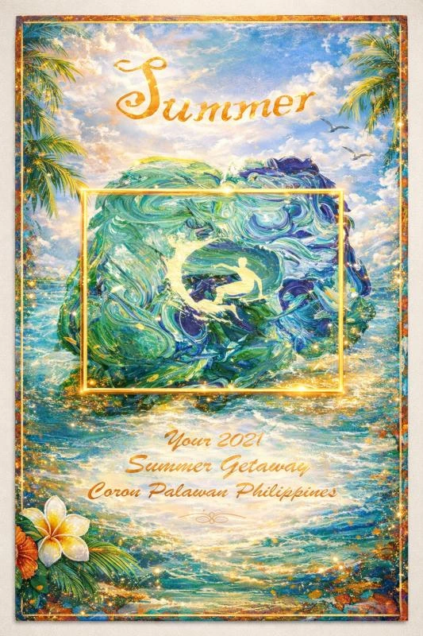
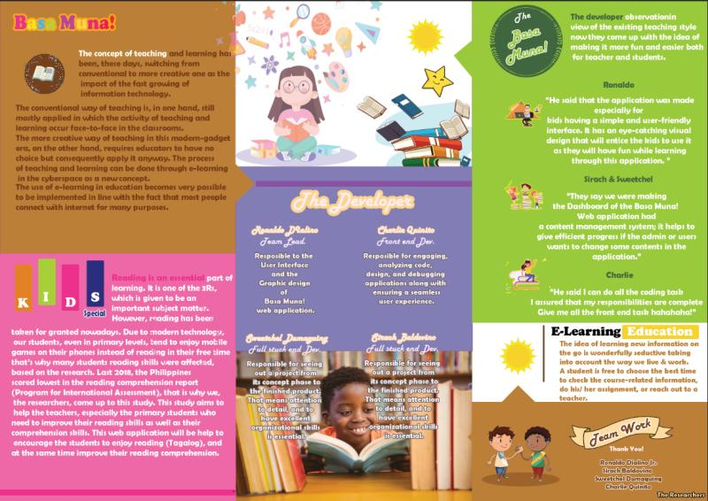

What Ron's Work is built for
Work that is functional, clear and easier to manage.
Support systems that reduce friction for teams and clients.
A balance of technical structure, visual thinking and practical delivery.
Ronaldo Dialino Jr.
Healthcare Operations & Technical VA
Visible trust signals
Public work, documented feedback and clearly labeled concept studies.
- 02
- Live public builds
- 07
- Feedback entries
- 42
- Tools catalogued
- Human
- Review before handoff
Selected work · 04 projects
Proof before
promises.
Each project is framed around what it solves, how it behaves and why the details matter.

01 / 04
Live website ↗
Interactive invitation2026
Digna's 70th Birthday
Video, photography, program details, dress code and location guidance shaped into one responsive celebration experience.
Live public build
- Challenge
- Bring scattered event information into one clear guest destination.
- Outcome
- A responsive invitation that works across phone and desktop.
- Responsive UI
- Motion design
- HTML/CSS/JS

02 / 04
Live website ↗
Interactive invitationBirthday experience
Kyrie's Royal Birthday
A focused mobile invitation with atmosphere, music controls, event information and clear guest interaction.
Live public build
- Challenge
- Create a compact invitation that still feels atmospheric and easy to use.
- Outcome
- A mobile-first experience with music, event details and clear guest actions.
- Mobile-first
- Audio controls
- Interaction design
Dashboard conceptData UX
ProfitPulse Command Center
Profitability, margin, inventory risk and priority actions brought into a decision-focused operational dashboard.
Concept study
- Challenge
- Make margin, inventory risk and priority actions easier to scan together.
- Outcome
- A decision-focused dashboard concept that groups operational priorities.
- Dashboard UX
- Data storytelling
- Motion prototype
Operations interfaceInventory & reporting
Lighthouse
Five connected views for inventory, scheduling, monitoring and operational visibility—designed as one coherent system.
Concept study
- Challenge
- Connect inventory, schedules and monitoring through one consistent interface system.
- Outcome
- Five coordinated views with shared navigation and information hierarchy.
- Operations UI
- Information design
- Interface system
Live links are public builds. Dashboard projects are labeled as concept studies and are not presented as deployed client systems.
How I help
One partner.
Connected skills.

Clear trackers, complete records and visible next actions for document-heavy work.

Practical automation reduces repetition while human review protects quality and confidentiality.

Web experiences, invitation design, jersey systems and artwork shaped with clearer structure and stronger visual atmosphere.
A practical engagement
From messy input to a usable handoff.
Scope first, tools second. Every engagement starts with the current gap and ends with something the client can understand, use and maintain.
- 01
Diagnose
Capture the current workflow, friction, volume, owners and desired result.
- 02
Define
Agree on the first deliverable, review points, safeguards and evidence of success.
- 03
Build
Create the tracker, workflow, interface, report or responsive experience.
- 04
Review
Test the output, document the handoff and refine the highest-impact details.
Human-reviewed automation
No patient data in the public intake
Clear scope before delivery
Maintainable handoff
Complete visual archive
A visual journey
through selected work.
Five concise stops across poster design, educational layout, school covers, sportswear and travel artwork.




01 / 05
Punk Rock Poster
Step 01
Punk Rock Poster
High-energy event artwork using neon contrast, layered typography and a strong central guitar graphic.
Step 02
Basa Muna
An educational trifold that explains a reading-focused application through colorful, student-friendly sections.
Step 03
Dionne's Cover Collection
Three coordinated preschool covers with playful themes and a consistent visual system.
Step 04
Bagets Jersey
A custom basketball uniform balancing team identity, readable numbering and coordinated side-panel graphics.
Step 05
Summer in Palawan
A decorative travel poster combining painterly textures, a luminous frame and a dreamy coastal palette.
Professional feedback
Reliable work
earns trust.
“
Ron is incredibly reliable and detail-oriented. His work on our CRM and customer communications has been outstanding.
Ron is a reliable and organized member of our Billing section. He has been a huge help with Excel, schedules, reports and troubleshooting.
Excellent administrative support. Ron keeps our department running smoothly and never misses a deadline.
You are reliable in handling your responsibilities. Your consistency is appreciated.
You continue to rank among the top, reflecting accuracy, strong understanding and dedication.
Your work is good and your effort is evident. More regular updates can make coordination even stronger.
Very helpful, much appreciated. Thanks to all of you for helping us out.
Feedback is presented from supplied professional references and messages. Screenshots are shown only where source imagery is available.
Administrative Assistant / Records Officer
Rizal Medical Center · Billing and Claims
Virtual Assistant · Operations & Data
Mainely Grass · RealGreen CRM, technician reports, GIS and coordination
Cancer Registry Support
Patient-data verification, documentation and coding support
Data Research Analyst / SEO
E-commerce data, ROI reporting and listing optimization